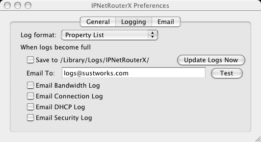
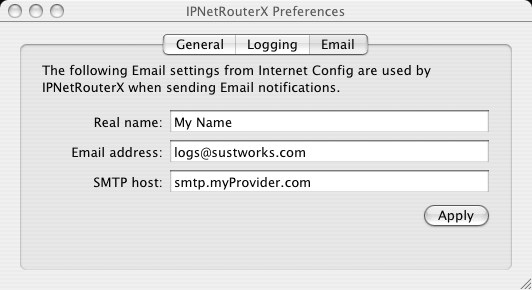
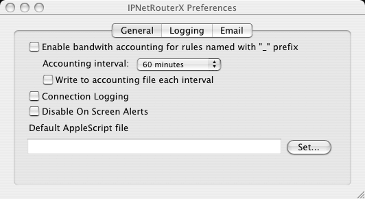

The Prefernces window allows you to configure IPNetRouterX logging and notification options.

To open the Preferences window, select "Preferences" under the IPNetRouterX menu. This page describes the various preference settings in more detail.
You can choose how logging information is displayed using the Log format popup menu. The options are:
Logged text is normally buffered in memory to avoid frequent disk access. The Preferences window allows you to specify what should be done when the log buffer becomes full. Options include send as Email or save to disk.
Email To - logged text will be sent to the specified Email address. Email is sent using Mac OS X's built-in message framework based on the "Internet Config" settings under the Email tab. Pressing the "Test" button will generate a test Email to verify Email notification is working.
Email Bandwidth Log - If bandwidth accounting is enabled, the corresponding log will be sent to the "Email To" address with subject "-- IPNetRouterX Bandwidth Log --".
Email Connection Log - If connection logging is enabled, the corresponding log will be sent to the "Email To" address with subject "-- IPNetRouter Connection Log --".
Email DHCP Log - If the DHCP Server is enabled, the corresponding log will be sent to the "Email To" address with subject "-- IPNetRouterX DHCP Log --".
Email Security Log - the Security log will be sent to the "Email To" address with subject "-- IPNetRouterX Security Log --". The security log reports any traffic that is filtered along with other network events and program status.

The settings under the Email tab allow you to specify how Mac OS X's built-in message framework should send email notifications.

IPNetRouterX keeps some basic traffic statistics for each firewall rule including the number of packets matching that rule (match count), the total number of bytes in the matching packets (byte count), and the last time a packet matched that rule. By enabling "Bandwidth Accounting", IPNetRouterX allows you to keep a record of the amount of traffic matching designated firewall rules. Since the traffic associated with much of the filter tree is not likely to be of interest, only those rules you specify by starting their name with an underscore "_" prefix are actually logged. At regular intervals as specified by the Accounting Interval, IPNetRouterX will record the time of day and byte count of each designated rule by name. Once a day or when you quit the program, IPNetRouterX will save the recorded bandwidth information by sending Email or writing it to a "bandwidth log" file similar to other logging information. The format of the bandwidth log is a NeXT style property list for easy processing by other programs. A simple example is shown below:
{
"2003-07-07 08:14:32 -0400" = {"_default first" = 0; };
"2003-07-07 09:14:32 -0400" = {"_default first" = 411K; };
"2003-07-07 10:14:32 -0400" = {"_default first" = 538K; };
"2003-07-07 10:58:33 -0400" = {"_default first" = 802K; };
}
IPNetRouterX allows you to keep a record of each connection or data flow established between a local and remote network endpoint (IP address and protocol port) and the amount of traffic sent between them. The connection log may be used as an audit trail to verify whether a specific network access has occurred, but more interestingly, by analyzing the connection data (see Traffic Discovery) we can answer questions like what are the top 25 remote sites, network services, or protocols used as a percentage of total bandwidth. Connection logging can provide a higher level view of network usage patterns while bandwidth accounting allows us to measure specific traffic of interest.
You can disalbe on-screen alerts as a convenient global preference.
Additional notification options can be defined using AppleScript. When the action for a matched filter rule is to perform an AppleScript, IPNetRouterX will try to launch an ApplesScript using the Default AppleScript file specified in the preferences window, or a file in the same directory whose filename is specified in the Parameter field.